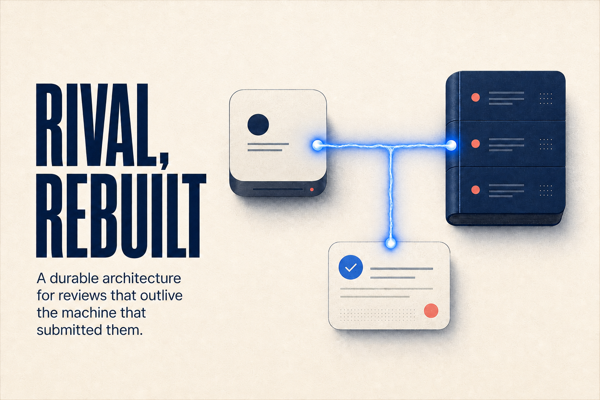

Jobs, not processes
A review has a stable ID, durable state, attempts, and a re-readable result.
From detached processes to durable jobs
A local-first review system where work can run anywhere and results outlive the machine that submitted them.

The idea itself
Submit an exact repository state now. Let the right worker review it independently. Retrieve the durable result whenever you return.
Rival becomes an asynchronous review product—not a CLI subprocess runner with dashboards added around it.
01 · System architecture
The UI configures. The controller routes. Workers execute. Jobs remember.
A review has a stable ID, durable state, attempts, and a re-readable result.
After acknowledgement, execution no longer depends on the developer Mac.
The same API runs over a Unix socket locally and SSH stdio remotely.
State and results are reconstructed from the worker ledger after any gap.
02 · The public object
Reviewer and judge executions become internal steps. No public PIDs, session scraping, or GroupID reconstruction.
03 · Submission
A job is never reported as queued on the strength of a local process or an open SSH connection.
Generate a UUIDv7 job ID and typed request.
Build an immutable repository snapshot, even locally.
Commit to the controller outbox before using the network.
Stream to the selected worker and verify hashes.
The worker transactionally inserts the complete queued job.
Only now does the CLI return state=queued.
04 · Worker internals
Completion is queryable state. Reading a result never consumes or deletes it.
05 · Harness contract
wait is expendable. The result is durable and repeatable.
$ rival review --workdir . --json {"job_id":"019a…f42","worker":"reviewbox", "state":"queued"} $ rival wait 019a…f42 completed · 3 findings · 06:41 $ rival result 019a…f42 --format markdown
06 · Failure model
rivald and every worker continue.
The durable local outbox retries after launchd starts.
The remote worker owns and completes the job.
Execution continues; the local catalog catches up later.
The ledger still contains the queued job.
The attempt is retained; retry is explicit to avoid duplicate cost.
Cursor reconciliation discovers the immutable result.
Backups or replication are required to survive host storage loss.
The honest guarantee: exactly-once provider execution is impossible. Rival provides at-least-once attempts and exactly one published logical result.
The decision
TUI · web server · file/flock queue · detached execution · PID lifecycle · temp-file results · session scraping
review · jobs · status · wait · result · logs · cancel · retry · route explain · worker doctor
Build sequence